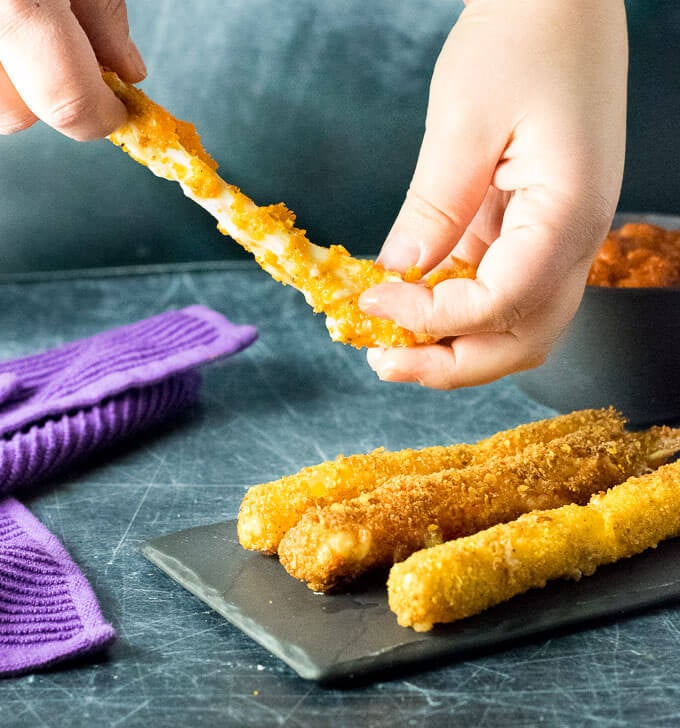

Go back
Dorito Mozzarella Sticks

Description
Delicious Dorito covered Mozzarella sticks inspired by 7-11.
Ingredients
- Mozzarella Sticks
- 4 cups vegetable oil
- 2 eggs
- 1/4 cup of water
- 1 and a half cup of crushed doritos
- 2/3 cup flour
- 1/3 cup cornstarch
Instructions
- Make eggwash
- Add flour and cornstarch together
- In another bowl crush doritos
- Roll the cheese stick in flour, then dip in eggs, and finally the crushed doritos
- Fry the cheese stick until they turn golden brown.